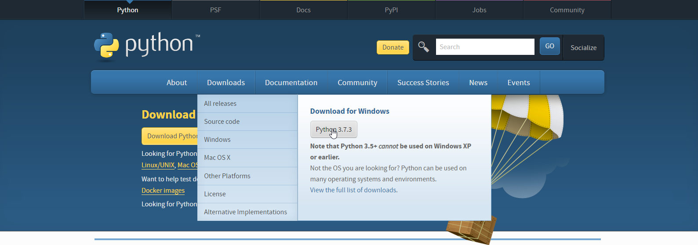
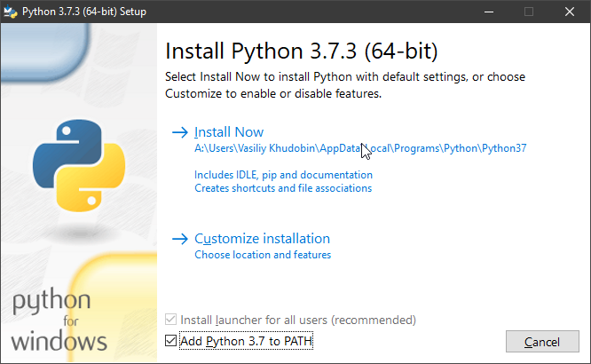
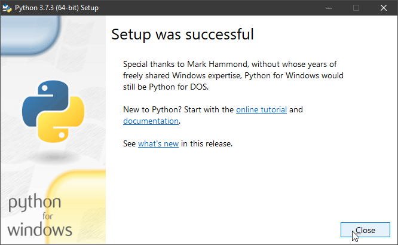
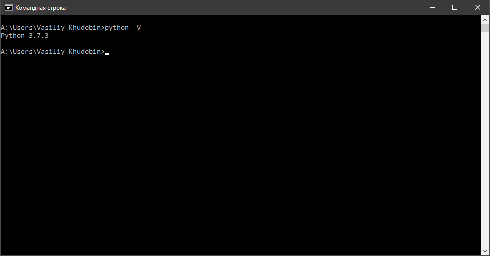
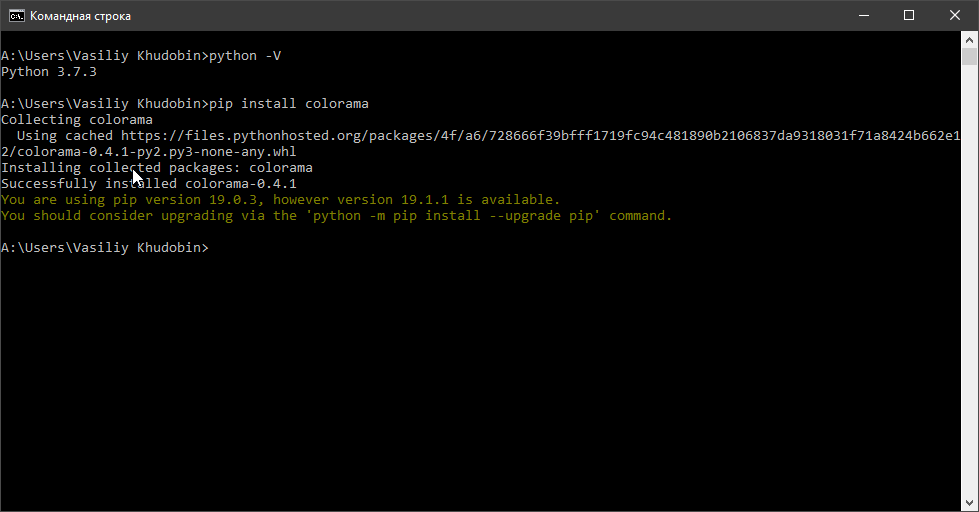
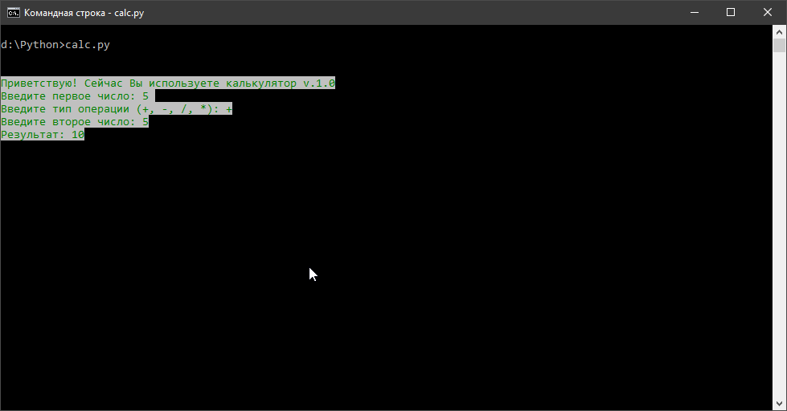

Приветствую тебя, друг! Это статья посвящена написанию консольного калькулятора на языке программирования Python. Долгим вступление делать не буду, ведь ни тебе, ни мне оно не нужно, а сразу приступим к делу!
Для того, чтобы установить Python 3 актуальной версии (это важно), необходимо перейти на официальный сайт разработчиков python.org и скачать Python 3.7.3
После загрузки запускаете установочный файл "python-3.7.3.exe". В окне установки ОБЯЗАТЕЛЬНО ставим галочку на пункт "Add Python 3.7 to PATH", чтобы наш Python мог работать.
Готово! Наш Python 3.7 установлен на компьютер!
Но для надежности, давайте убедимся в этом, запустив командную строку, вводим "python -V"
Как мы видим, Python работает, и подтвердил, что он версии 3.7.3
Данный модуль позволяет перекрашивать текст и фон в командной строке. Не более. Просто если ты хочешь, чтобы все смотрелось не так ужасно (а я напомню, что калькулятор будет консольным), то можно воспользоваться Colorama
Итак, чтобы устанавливать любые модули в Python, нужно вводить следующую команду: "pip install [module]", где [module] в нашем случае colorama.
Готово!
Наконец, мы приступили к самому интересному, к написанию нашего кода! Первым делом, создадим файл "calc.py" (название файла может быть любое, главное, чтобы расширение ".py" оставалось таким же) и импортируем ранее установленный модуль Colorama, а также init():
import colorama
from colorama import Fore, Back
from colorama import init
init()
Теперь объясняю. import отвечает за импортирование файлов из нужного нам модуля, что понятно из названия. Мы импортировали сам модуль в нашу программу, затем, необходимые модулю файлы и init(), отвечающий за запуск модуля. Едем дальше, создадим какое-нибудь приветствие, (сразу раскрасим его в зеленый на белом фоне) например, такое:
print(Fore.GREEN)
print(Back.WHITE)
print('Приветствую! Сейчас Вы используете калькулятор v.1.0')
Мы создали три функции print, две из которых отвечают за цвет: первая за текст, вторая за фон. Третья функция print отвечает за само приветствие.
Сейчас займемся "полем ввода". Создадим три переменных: первая будет отвечать за хранение первого числа, вторая за хранение операции, которую пользователь будет соверщать (т.е. сложение, умножение и тому подобное), третья за хранение второго числа:
a = input('Введите первое число: ')
operation = input('Введите тип операции (+, -, /, *): ')
b = input('Введите второе число: ')
Со следующего шага мы начинаем работу над созданием логики калькулятора:
if operation == '+':
c = int(a) + int(b)
print('Результат: ' + str(c))
elif operation == '-':
c = int(a) - int(b)
print('Результат: ' + str(c))
elif operation == '/':
c = int(a) / int(b)
print('Результат: ' + str(c))
elif operation == '*':
c = int(a) * int(b)
print('Результат: ' + str(c))
Тут все просто. Чтобы ты смог понять, что тут написано, давай перевдем с кода на человеческий язык:
Если операция равна "+", то
c = число(а) + число(b)
выводим на экран 'Результат: ' + строку(c)
Также и с остальными операциями. Но если пользователь введет не операцию, а какой-нибудь символ, например, букву "Р", то калькулятор либо закончит работу с ошибкой, либо вообще не станет работать. Давай это исправим:
else:
print('>> ОШИБКА!')
print('>> ВВЕДИТЕ ТИП ОПЕРАЦИИ (+, -, /, *)!')
Что мы этим сделали? Чтобы тебе было понятно, давай я опять-таки переведу все это на человеческий язык:
Если не одно условие не подошло, то:
выводим на экран '>> ОШИБКА!'
выводим на экран '>> ВВЕДИТЕ ТИП ОПЕРАЦИИ (+, -, /, *)!'
Вот, в принципе, наш калькулятор полноценно работает.
А что делать, если нам нужно, чтобы программа работала без среды Python? Переходим к следкющему шагу...
Итак, сборка программы длдя постоянного использовния называется компиляцией. Сейчас мы ей и займемся. чтобы скомпилировать нашу программу, первым делом мы должны установить модуль pyinstaller. После установки файла в командной строке вводим "pyinstaller название_файла.py" и ждем пока компиляция завершится. На месте, где был ваш файл с кодом, появятся три папки: _pycache_, build, dist и файл calc.spec. Переходим в папку dist и находим там calc.exe. Это и есть наша программа. Вот и все!